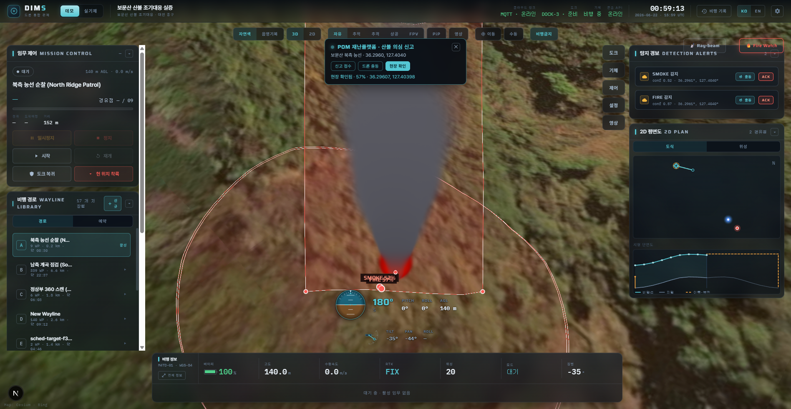
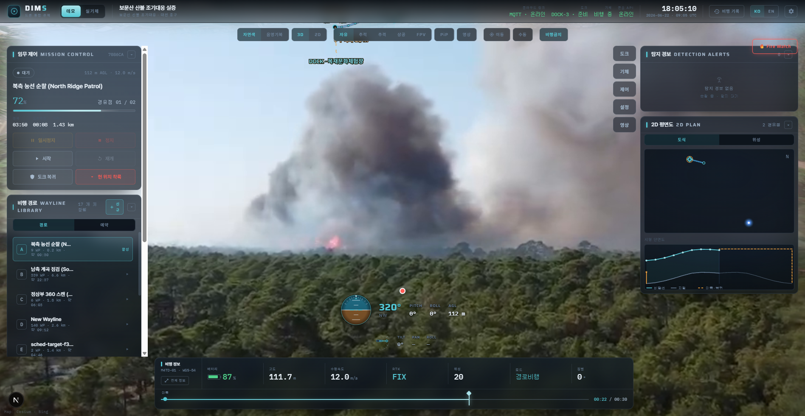

AI & Computer Vision 101
DIMS is, at its core, an AI system with wings. This chapter teaches you — from absolute zero, no maths — the handful of ideas that make a drone able to look at a video and say “that’s fire.” By the end you’ll understand every AI word the rest of the handbook throws at you.
1. AI vs Machine Learning — the one big shift
For most of computing history, software worked by rules a human wrote: “if the temperature is above 100, sound the alarm.” That works great when you can spell out the rule. But how would you write the rule for “this group of pixels is smoke”? Smoke has no fixed shape, colour, or size. You simply cannot type out an if-statement for it.
Artificial Intelligence (AI) is the broad goal of making machines do things that normally need human judgement. Machine Learning (ML) is the practical technique that gets us there, and it flips the old approach on its head: instead of writing the rules, you show the machine thousands of examples and let it discover the pattern itself.
Classic programming: you write the rules. Machine learning: you provide the examples, and the machine writes its own rules. Everything else in this chapter is detail on top of that single flip.
You don’t teach a child what a dog is by reciting “four legs, fur, a tail, barks.” (A cat fits that too.) You just point at dogs — “dog… dog… that’s a dog” — a few hundred times, and one day the child reliably spots a dog they’ve never seen before. They learned the pattern from examples. That is exactly how an ML model learns to spot fire.
2. Neural networks, in plain English
The most powerful kind of ML today uses a neural network — software loosely inspired by how brain cells connect. Picture it as layers of tiny decision-makers (“units”). The first layer looks at the raw pixels and notices very simple things: edges, blobs of colour. The next layer combines those into slightly bigger ideas — a curve, a corner. Layer after layer, the ideas get richer: textures → shapes → “a wing-like thing” → “a drone.”
Between every unit sit connections, each with a number called a weight that says how much one unit’s opinion matters to the next. A fresh network has random weights and is useless. Learning is just nudging millions of those weights, a tiny bit at a time, until the whole network reliably produces the right answer.
Imagine a huge panel of judges deciding “is this a face?” Junior judges only see fragments — an eye here, a nostril there. They whisper their findings up to senior judges who combine them — “two eyes above a nose above a mouth… yes, a face.” At first the judges trust each other randomly and get it wrong. After being corrected thousands of times, each judge learns exactly how much to trust each colleague. Those trust levels are the weights. A trained network is just a panel that has finally learned who to listen to.
3. Training vs Inference — the two phases
Every AI model lives a two-part life, and the distinction matters enormously for DIMS.
| 🏋️ Training | ⚡ Inference | |
|---|---|---|
| What happens | Teach the model by showing it labelled examples and correcting its mistakes | Use the finished model on brand-new data it’s never seen |
| When | Once, up front (then occasionally re-done) | Constantly, live, in the field |
| Speed | Slow — hours or days is fine | Fast — must keep up with live video |
| Where | On powerful machines with big GPUs | Wherever the answer is needed, right now |
Training is like studying for an exam; inference is sitting the exam. You study once, slowly, painfully — then you answer questions fast. DIMS runs inference on every single video frame coming off the drone. At dozens of frames per second, the model must answer “any fire? any defect?” in milliseconds, over and over. That speed requirement drives a lot of the engineering you’ll meet later.
4. Datasets & labelling — the fuel
A model is only as good as the examples it learns from. A dataset is the big collection of those examples. For our work, that means thousands of images, each labelled by a human who drew a box around every fire, every crack, every defect and typed what it is. The model never sees your labels at inference time — it learns from them during training, then reproduces that judgement on its own.
Two things decide dataset quality: size (more varied examples → the model generalises better) and correctness (sloppy labels teach the model the wrong thing — “garbage in, garbage out”). Building a clean, standardized dataset is real, valuable work — which is exactly why CNS has a whole project for it.
CNS’s Data Voucher project builds a standardized Drone Facility-Inspection & Cleaning Dataset — thousands of labelled records that feed the DIMS AI. Good data is not a side task; it’s the foundation everything else stands on. (Full detail in chapter 17.)
5. Computer-vision tasks — three flavours of “looking”
Computer vision (CV) is the branch of AI that makes sense of images and video. When people say “the model sees the fire,” they mean one of three increasingly precise tasks. Knowing the difference is essential vocabulary on the DIMS team.
Classification answers one question about the whole image: “What is this a picture of?” → “fire.” It’s the simplest task — a single label for the frame. The catch: it tells you fire is present, but not where. For a drone that needs to point a camera or pin a coordinate, “somewhere in this frame” isn’t good enough.
Object detection answers “what, and where?” It draws a bounding box — a rectangle — around each object and attaches a confidence score, e.g. fire 0.74 (the model is 74% sure). One frame can hold many boxes. This is the workhorse of DIMS: the box gives a screen location, which DIMS later turns into a real-world coordinate. (See chapter 16.)
Segmentation is the most precise: instead of a rough rectangle it outlines the object’s exact shape, labelling every pixel as “fire / not-fire.” This pixel-perfect outline is called a mask. It’s heavier to compute but tells you the true size and shape of a plume or a crack — useful when “how big is it?” matters, not just “where is it?”
A handy mental ladder: classification = “fire is here somewhere,” detection = “fire is in this box,” segmentation = “fire is these exact pixels.” DIMS uses detection as its bread-and-butter and segmentation when shape matters.
6. What YOLO is
The detector DIMS relies on is YOLO — “You Only Look Once.” The name describes its trick: older detectors scanned an image many times in pieces; YOLO looks at the whole frame in one pass, which makes it dramatically faster. Fast enough to run on live video, in real time.
Some people read by sounding out every letter, one at a time — slow but thorough. A fluent reader takes in a whole line at a glance. YOLO is the fluent reader: one look at the entire frame and it knows what’s there and where. That single glance is why it can keep up with a flying camera.
Why does “real time” matter so much for a flying drone? Because the drone — and the fire — won’t wait. If the model takes two seconds per frame, the aircraft has already moved tens of metres and the moment is gone. Real-time detection is what lets DIMS aim the gimbal, track a target, and pin a fresh coordinate while it’s still happening. DIMS ships 7 production YOLO models — for fire and smoke, structural defects, and more — each trained for a different inspection job.

7. Running models fast — formats, GPUs & CUDA
A trained model is a big bundle of those learned weights. To actually run it efficiently, two things matter: the format you save it in, and the hardware you run it on.
Model formats
ONNX (Open Neural Network Exchange) is a portable file format — train a model in one toolkit, export to ONNX, and run it almost anywhere. DIMS ships its models as ONNX for exactly this flexibility. TensorRT is NVIDIA’s speed-optimized format: it rewrites a model to squeeze maximum performance out of NVIDIA hardware specifically. Think of it as ONNX = “runs everywhere,” TensorRT = “runs blazing fast on NVIDIA.”
Why GPUs beat CPUs for AI
A CPU is like a few brilliant chefs — it does a small number of tasks, one after another, very cleverly. A GPU (graphics processing unit) is like an army of thousands of line cooks — each one simple, but all working at the same time. Neural networks are basically the same little calculation repeated millions of times, which is perfect for that army. The result: a GPU can run a model many times faster than a CPU.
To paint a stadium, one master painter (the CPU) does flawless work but takes forever. A thousand decent painters (the GPU), each handed one seat, finish in minutes. AI is the stadium: lots of identical, independent little jobs. That’s why we reach for the crowd, not the master.
CUDA is NVIDIA’s software toolkit that lets our code actually command that army of cores. On DIMS, moving inference from the CPU onto an NVIDIA RTX 5080 GPU via CUDA gives roughly a 6.5× speed-up — the difference between a sluggish overlay and smooth real-time detection on the live feed.

8. Measuring accuracy — precision, recall & F1
How do we know a model is any good? “It works” isn’t a number. CV uses two simple measures, then combines them.
- Precision — of everything the model called fire, how much really was fire? Low precision = lots of false alarms.
- Recall — of all the fire that was actually there, how much did the model catch? Low recall = it misses real fires.
These pull against each other: you can catch everything by yelling “fire!” constantly (great recall, terrible precision), or stay silent to avoid false alarms (great precision, useless recall). The F1 score is a single number that balances both — high F1 means the model is both trustworthy and thorough. DIMS targets F1 ≥ 98.5% for defect detection — a deliberately demanding bar, because in inspection a missed crack and a false alarm are both expensive mistakes.
You rarely start a model from scratch. Fine-tuning takes a model that already knows a lot about images and gives it a short, focused extra round of training on your specific data — e.g. teaching a general detector what Korean forest smoke looks like. It’s much faster than training from zero and is how DIMS adapts models to each job.
Want the deep version? Confidence thresholds & the precision/recall dial
Every detection comes with a confidence (that 0.74). DIMS only acts on boxes above a chosen threshold. Raise the threshold and you keep only the surest detections — precision goes up, recall goes down (you reject borderline-but-real fires). Lower it and you catch more but invite false alarms. Tuning that single dial per model and per scenario is a big part of getting real-world behaviour right — and why we measure with F1 rather than one number alone.
Where this fits in DIMS
Put it together and you have the DIMS AI story: a YOLO detector, trained once on a labelled dataset, exported to ONNX, and run as fast inference on an NVIDIA GPU over every frame of live drone video — drawing confident bounding boxes that the rest of the pipeline turns into map coordinates. The next chapters build directly on this foundation.
“AI learns patterns from examples instead of hand-written rules; a neural network learns by adjusting connection weights. Models are trained once (slow, on a GPU) then run inference live (fast) — DIMS does inference on every video frame. They learn from labelled datasets like the one CNS’s Data Voucher project builds. Computer vision spans classification, object detection (a box + confidence like ‘fire 0.74’), and segmentation (a pixel mask). DIMS uses YOLO — a real-time detector — across 7 production models, runs them as portable ONNX (or fast TensorRT) on an NVIDIA RTX 5080 via CUDA for a ~6.5× speed-up, and judges accuracy with precision, recall and an F1 score targeting ≥98.5%.”